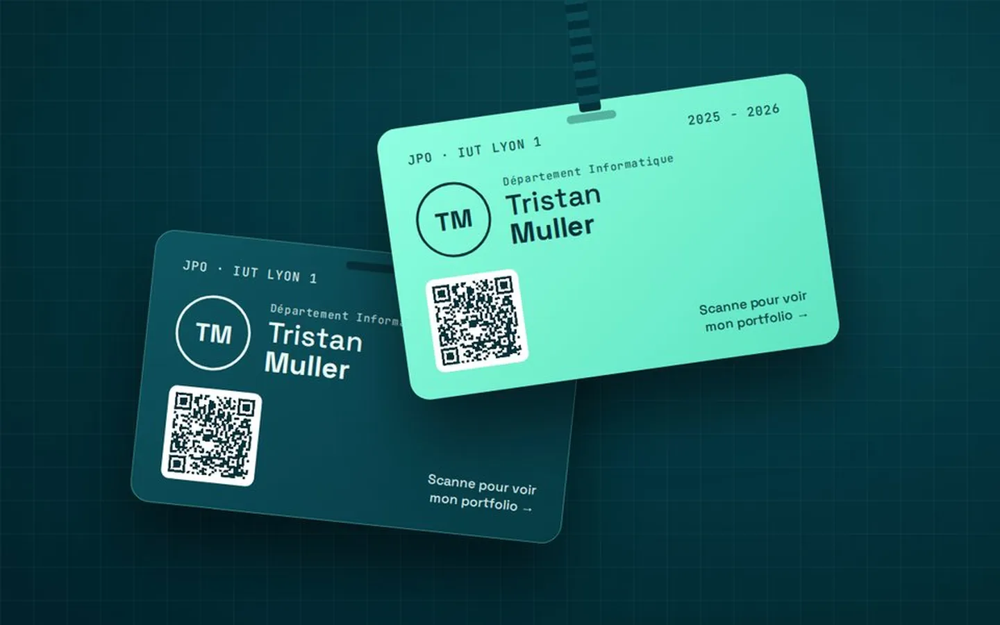

Cartes étudiantes pour les JPOStudent Cards for Open Days
Des cartes étudiantes avec un QR code vers le site de chaque étudiant, pour présenter l'IUT aux Journées Portes Ouvertes. Les cartes sont générées automatiquement par un outil Node.js.Student cards with a QR code linking to each student's website, to present the university at its Open Days. The cards are generated automatically by a Node.js tool.

Vue d'ensembleOverview
Le projet consistait à créer des supports pour promouvoir le site de Bourg-en-Bresse lors des Journées Portes Ouvertes : l'IUT, ses départements, la ville et l'Ain.The brief was to create material promoting the Bourg-en-Bresse campus at Open Days: the university, its departments, the town and the Ain area.
ObjectifObjective
Valoriser les étudiants et leurs compétences auprès des visiteurs, avec un support simple à distribuer et un lien vers leur site personnel.Showcase students and their skills to visitors, with something easy to hand out that links to their personal website.
DémarcheApproach
- Identification des cibles et des attentes du demandeur.Identifying the audience and what the client expected.
- Maquette et charte graphique des cartes.Card mock-up and visual identity.
- Template SVG dont les champs sont remplis automatiquement.SVG template whose fields are filled in automatically.
- Outil en ligne de commande Node.js : hébergement des sites, QR codes, cartes SVG.Node.js command-line tool: site hosting, QR codes, SVG cards.
FonctionnalitésFeatures
- Une carte par étudiant avec nom, prénom, département et annéeOne card per student with name, department and year
- QR code vers le site personnel de l'étudiantQR code linking to the student's website
- Génération en série à partir d'un template SVGBatch generation from an SVG template
- Notices d'utilisation pour les étudiants et les enseignantsUser guides for students and teaching staff
Ma contributionMy contribution
Conception graphique des cartes, en groupe, et préparation de la soutenance. L'outil Node.js a été codé par un autre membre.Card design, as a team, and preparing the final presentation. The Node.js tool was written by another team member.